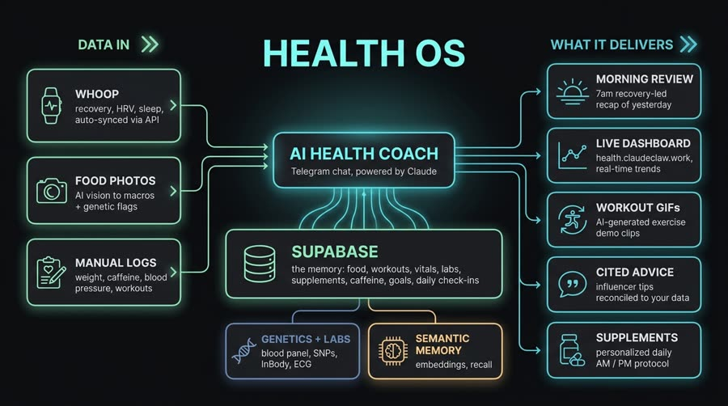
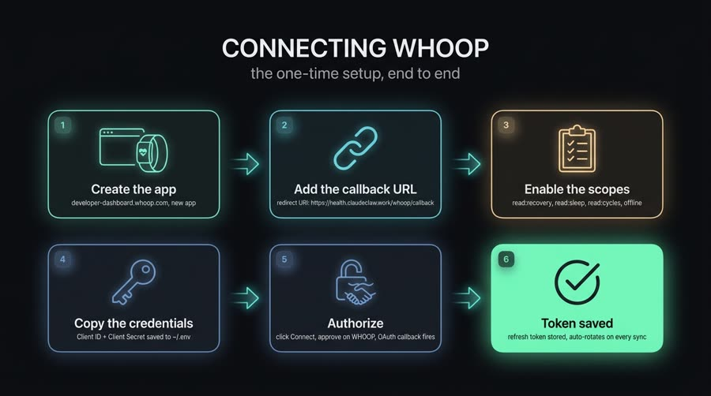
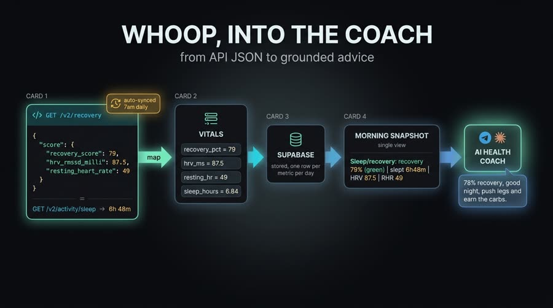
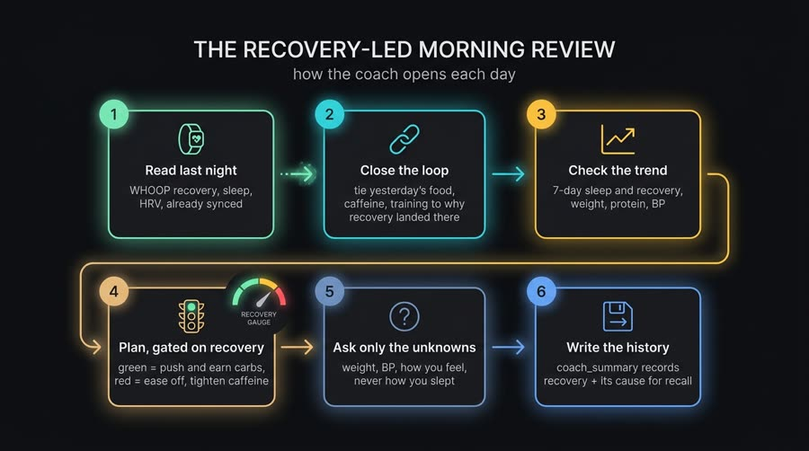
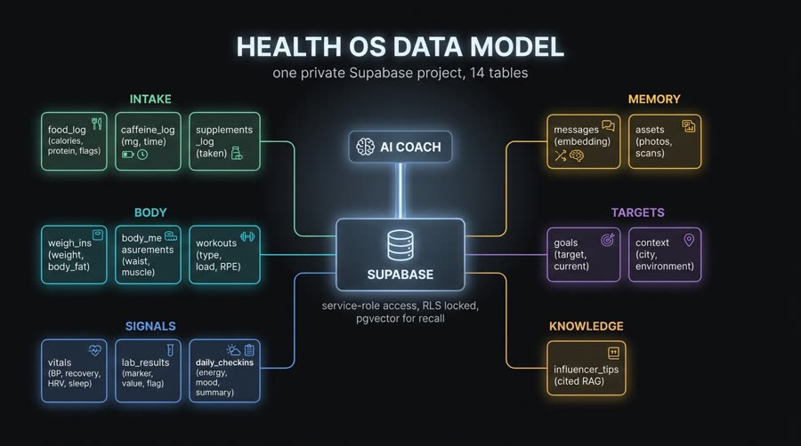

Um agente no Telegram que lê seu wearable, guarda seu histórico num Supabase próprio e fundamenta cada resposta nos seus exames, genética e metas. Clone, aponte pro seu projeto e bot — e tenha um coach que revisa ontem e lê a recuperação de hoje.

Um coach fundamentado nos seus dados reais dá conselhos cientes do mecanismo, em vez de platitudes. O design inteiro força essa especificidade — e mantém tudo trancado no seu próprio Supabase privado.
Os exames de sangue, SNPs de DNA, composição corporal e metas viram o contexto de cada resposta. Cada marcador mapeia para uma risk flag, um suplemento ou um alvo no schema.
Tudo é gravado em linhas estruturadas — comida, treinos, vitais, exames, check-ins — mais memória semântica das mensagens. O coach enxerga padrões ao longo de semanas, não só reage à última mensagem.
Lê a recuperação do WHOOP da última noite e condiciona o plano de hoje ao número: verde, avança; vermelho, pega leve — e te ensina as suas próprias alavancas.
No início de cada turno o agente lê um snapshot da sessão compacto — tendência de peso, ingestão de hoje, PA, recuperação da última noite, padrão de sono dos 7 dias e metas — então sempre responde a partir do contexto atual.
Crie um app WHOOP, registre o callback, habilite read:recovery read:sleep read:cycles offline e autorize uma vez. Um cron diário (whoop-sync.py) puxa recuperação + sono para a tabela vitals, rotacionando o refresh token a cada execução e enviando um user-agent de navegador (o Cloudflare bane o padrão do Python).


vitals.Todo segredo vive em ~/.env (no seu home, nunca um .env de projeto, nunca commitado). Copie agent/.env.example e preencha.
Python 3.9+ (scripts só com stdlib, exceto advice.py), Node para o agente + dashboard, e ffmpeg só para os clipes de treino.
# única dependência pip pip install requests
Projeto Supabase privado + Supabase CLI para aplicar as migrations, e um bot do Telegram criado no @BotFather.
# bucket privado de fotos python3 agent/scripts/db.py mkbucket health-assets
Telegram, Supabase, OpenAI (embeddings) e Google/Gemini (visão). Opcionais: WHOOP, Apify e uma API de vídeo.
# ~/.env (exemplo) HEALTH_BOT_TOKEN=… SUPABASE_URL=… OPENAI_API_KEY=… GOOGLE_API_KEY=…
Sete passos. O detalhe completo, ponta a ponta, está em docs/BUILD_GUIDE.md no repositório.
Tudo aqui é genérico ou exemplo — sem nenhuma informação pessoal de saúde. Traga seus próprios dados, bot e projeto Supabase.
git clone https://github.com/inematds/health-os && cd health-os
Projeto privado em região apropriada; faça o push de agent/supabase/migrations/ (cria pgvector e as 14 tabelas) e o bucket privado de fotos.
supabase db push # aplica todas as migrations python3 agent/scripts/db.py mkbucket health-assets # bucket privado
~/.envCopie o exemplo e preencha as chaves do Supabase, OpenAI, Google/Gemini, seu token do Telegram e (opcional) WHOOP. Nunca commite o seu ~/.env real.
cp agent/.env.example ~/.env # depois preencha os valores
Gere o token no @BotFather e aponte telegram_bot_token_env no agent.yaml. Os slash commands (/checkin, /today, /sofar, /newday, /supplements, /advice) aparecem no menu "/".
# em agent.yaml telegram_bot_token_env: HEALTH_BOT_TOKEN
CLAUDE.md com o seu perfilÉ o cérebro do coach: meta, exames de sangue, genética e restrições. Quanto mais específico o perfil, mais o conselho é ciente do mecanismo.
cp agent/CLAUDE.md ./CLAUDE.md # e preencha com o seu perfil real
OAuth único; depois agende whoop-sync.py algumas vezes pela manhã (idempotente). Use o crontab.example (Linux) ou o whoop-sync.plist.example (macOS launchd).
python3 agent/scripts/whoop-sync.py # grava recovery_pct, hrv_ms, resting_hr, sleep_hours
O check-in é um turno do LLM — agende o prompt /checkin toda manhã pelo scheduler da sua plataforma. Ele abre com a recuperação da última noite e condiciona o plano do dia.
/checkin # abre com a recuperação e gateia o plano de hoje
Um dia típico, todo no Telegram. Exemplo ilustrativo — não são números reais, e não é aconselhamento.
food_log)

O README traz um checklist completo para verificar no seu próprio setup. Em resumo, você valida o sistema em seis frentes:
pgvector, as 14 tabelas, RLS sem policies, bucket health-assets e seed com as suas metas.CLAUDE.md preenchido com o seu perfil.food_log, peso → weigh_ins, PA → vitals, exame → lab_results, e recall semântico das mensagens.whoop-sync gravando recuperação/HRV/RHR/sono, idempotente, com rotação de token e cron matinal.coach_summary.